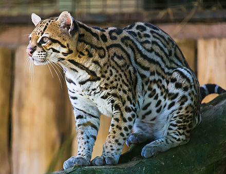

The ocelot is a medium-sized spotted cat, similar to the bobcat in physical proportions. The ocelot is between 55 and 100 centimetres (22 and 39 in) in head-and-body length and weighs 8–16 kilograms (18–35 lb).
The ocelot (Leopardus pardalis), also known as the dwarf leopard, is a wild cat distributed extensively within South America, including the islands of Trinidad and Margarita, Central America, and Mexico.
| Name | Location |
|---|---|
| aequatorialis | Costa Rica |
| albescens | Texas |
| melanura | Guyana |
The ocelot is a medium-sized spotted cat, similar to the bobcat in physical proportions. The ocelot is between 55 and 100 centimetres (22 and 39 in) in head-and-body length and weighs 8–16 kilograms (18–35 lb).